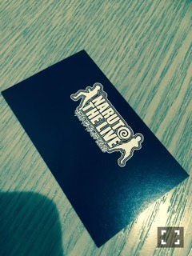
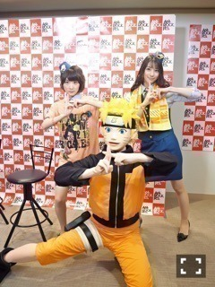

| 2016/07 18 Mon | ナルトくんっ！ |
ナルトくんの方がかわいいポーズしてるっっ！
昨日は梨花さんと一緒に

NARUTO THE ＬＩＶＥ 2016
にジャンポリから
出演アーティストさんにインタビューするという任務を遂行してきたよヽ(・∀・)ノ

アニメ NARUTO疾風伝の主題歌を歌われたアーティストさんや、
映画の方の主題歌を歌われたアーティストさんもいて、
NARUTOファンには堪らない1日でしたヽ(・∀・)ノ
前日には銀魂の方のＬＩＶＥが行われていて、
２つの作品がどれだけの人に愛されているか分かる時間だったと思います。
私のインタビューはつたない所しかなかったと思いますが、
最後の方に舞台に出て挨拶をした時に、
温かくお客様の皆さんが迎えてくださりました(´；ω；｀)⭐️⭐️
ありがとうございます(´；ω；｀)
アイドルだから、
自分の好きな作品を好きと言った瞬間に、
嫌な思いをしてしまう方が少なからずいると思うのですが、
私がNARUTOが大好きだ！
って言う気持ちに嘘はないから。
だから、昨日NARUTO大好きって気持ちを共有出来た様な気がして、
本当に楽しかったです！！
これからもずーっとNARUTOが大好きです！！
ジャンプ読者である限り、毎日幸せですヽ(・∀・)ノ
本当にジャンポリに出会えて感謝しています！！
今日はFNSうたの夏まつりヽ(・∀・)ノ
いつの間にか裸足でSummer披露し終わりました

見てくれたかな？？
夜まで頑張ります〜ヽ(・∀・)ノ⭐️
へばなっ☆彡
コメント(1551)
2016/07/18 16:00